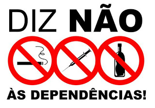
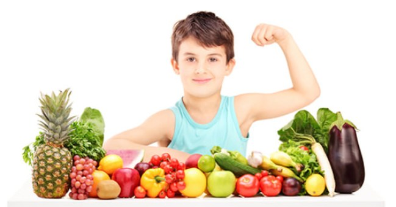

Desenvolvimento das capacidades dos jovens
Com uma prática regular de exercíco físico, os jovens conseguem manter um estilo de vida saudável, contribuindo para o seu bem-estar físico e mental, o que lhes permite melhorar a eficácia na forma como realizam as tarefas normais do quotidiano.
O exercício físico leva a uma melhoria das capacidades de concentração e raciocínio, levando a um estudo mais eficaz e um melhor rendimento escolar.
Integração escolar e autoestima
Através dos desportos coletivos os jovens melhoram a sua integração e têm mais facilidade em sentirem-se integrados num determinado grupo. Em muitos dos jovens chega também a ser uma forma de melhorar a sua auto-confiança e auto-estima, contribuindo para a manutenção de um peso saudável e uma aparência elegante, que é um aspecto que os jovens gostam hoje em dia.
Através destes desportos os jovens aprendem a cooperar promovendo uma aprendizagem que lhes será útil nas tarefas escolares e no mercado de trabalho.
Alívio de problemas e competitividade
A prática desportiva é um meio de libertação da realidade e do stress, pois faz com que os jovens se libertem dos problemas do dia-a-dia, do stress dos testes e dos exames para a avaliação.Também é muito importante na formação dos jovens porque os prepara para a competitividade da vida adulta.
Segurança e respeito
O desporto tem um papel importantíssimo na vida dos jovens, pois muitas vezes afasta-os de substâncias muito perigosas como o tabaco, o álcool e diversas drogas. A prática de deporto escolar e especialmente o gosto pelo desporto ensina os jovens a serem mais responsáveis e a adquirirem respeito mútuo.

Previne a obesidade infantil
Portugal é um dos países Europeus om maior taxa de obesidade infantil na Europa! O desporto escolar é algo que previne e que promove a descida da taxa de obesidade infantil.
